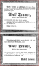

≡
World of Yesterday
Individuals
Surnames
Places
Sources
Media
Thumbnails

Death notice for Adolf Tramer 1911
Gramps ID
S0385
Media
Death of Adolf Tramer
References
Death, Tramer, Adolf
Tramer, Adolf (Primary)
[I5686]
Tramer, Adolf
[I5686]